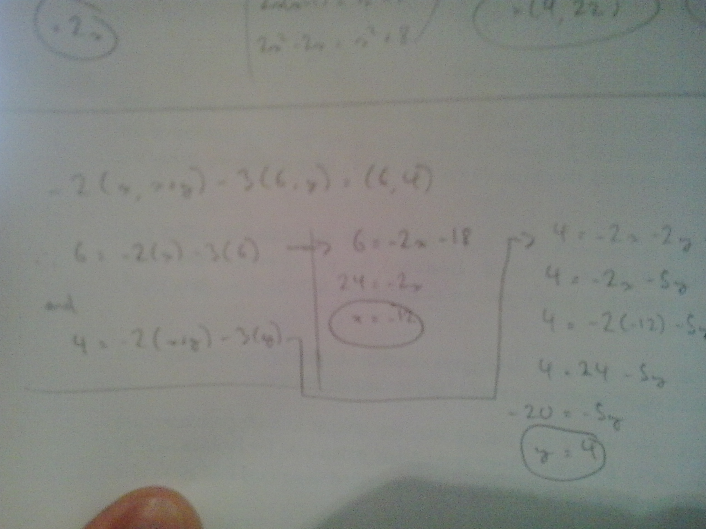
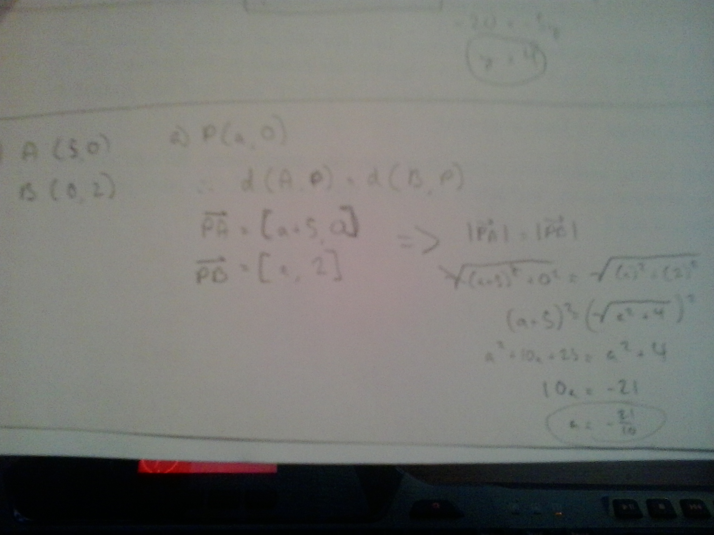
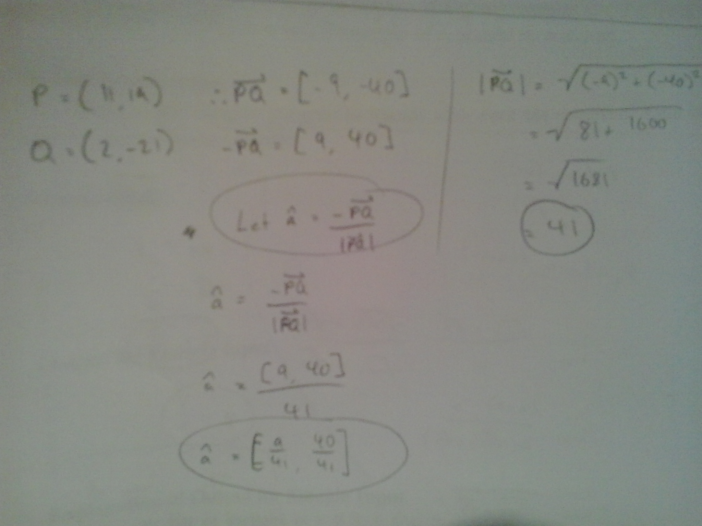

My Projects and Pages
Vector Stuffs (Tmp)
Question 13 b)
Question 15
Question 16
Project Solarus
April 17 - 2014
Off and on for the past few weeks, I've been toying with the idea of entering a local programming competition. I'd been slowly working away at a little top-down space shooter, with not much success and little inspiration. But today, I finally decided to submit my registry and begin some serious work on the game. So I accomplished a lot of lower-level tasks and ideas, such as a base Entity class, complete with virtual functions for rendering and collisions; which fills a vector array in the main Game class, all of which allows for quick and easy collision calculations and handling. I'm feeling really good about this to be honest, but I realize that this is going to be a long project, and I doubt that I'll get everything I have planned finished by May 10th (the deadline for app submission). If anyone in highschool in the Ottawa area is interested in entering the competition or just checking it out, all the information is available here.